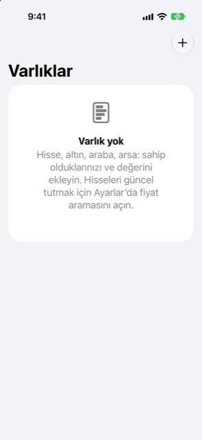

Kılavuz › Varlıklar
Yatırımlar ve varlıklar
Hisseler, fonlar, altın: neye sahipsiniz, değeri ne, kazancınız ne.
Varlıklar ekranı, sahip olduklarınızı ve bir değer verdiğiniz her şeyi listeler: hisseler, fonlar, altın ve başka metaller, taşınmazlar, araçlar ve sizin eklediğiniz her şey. İki soruyu tek bir yerde yanıtlar: varlıklarınız şu an ne kadar değerli ve kazancınız ne kadar oldu?

Ne zaman kullanılır
- Hisse, fon, altın ya da başka bir varlığa sahipsiniz ve değerinin mali durumunuzda sayılmasını istiyorsunuz.
- Bir şeyden daha fazla alıyorsunuz ya da bir kısmını satıyorsunuz ve maliyetin, satış gelirinin ve kazancın hesaplanmasını istiyorsunuz.
Varlıklar, Özet altında, Varlıklar bölümünde yaşar. Aynı öğeler Hesaplar altındaki Yatırımlar bölümünde de görünür.
Adım adım
Bir varlık ekleme
- Özet ekranını, ardından Varlıklar ekranını açın, sonra Ekle düğmesine (artı işaretine) dokunun.
- Tür'ü seçin: Hisse veya fon, Taşınmaz, Araç, Altın veya başka bir metal, ya da Diğer. Tür, varlığın sayfasının ne sunduğuna karar verir; örneğin bir sembol alanı.
- Adı, para birimini, miktarı ve bir birimin bugünkü değerini girin.
- Hisse veya fonsa, fiyatının internette sorgulanmasını istiyorsanız sembolünü girin (örneğin
WVRA.L). - Maliyeti (isteğe bağlı) bölümüne, toplamda ne ödediğinizi girin. Hak edilmiş RSU gibi bedelsiz aldığınız hisseler için boş bırakın ya da 0 girin. Hiçbir maliyetleri yoktur, bu yüzden değerlerinin tamamı kazanç sayılır.
- Ödeme kaynağı altında, şu anda satın alıyorsanız bir hesap seçin; hiçbir hesap bakiyesinin değişmemesi gerekiyorsa Zaten sahip seçeneğini seçin.
Değeri güncel tutmak
- Varlığın sayfasını açın. Değeri güncelle altında miktarı ve bir birimin değerini girin, sonra Kaydet'e dokunun.
- Eski bir rakamı düzeltmek için Kayıtlı değerler bölümüne gidin ve değere dokunun. Bir hatalıyı silmek için yanına kaydırın.
- Varlığın sayfasında, ödediğinizi düzeltmek için Maliyeti'ne dokunun. Bu kaydı düzeltir; hiçbir hesap bakiyesi değişmez.
- Yeniden adlandırmak, türünü değiştirmek ya da Daha fazla al… ve Sat… seçeneklerini kullanmak için Daha fazla'ya dokunun.
Kayıtlı en güncel değer geçerli olandır ve girdiğiniz bir değer, aynı gün getirilmiş bir sorgulanmış değeri geçer. Bir varlığın kayıtlı bir değeri olana kadar satırında Maliyetinde, henüz fiyat yok yazar ve ödediğiniz maliyetle değerlenir.
Daha fazla almak
- Varlığın sayfasında Daha fazla'ya, sonra Daha fazla al…'a dokunun.
- Eklenen birimleri, birim başına bugünkü fiyatı ve toplamda ödediğinizi girin. Toplam, siz kendi rakamınızı yazana kadar birim × fiyat olarak kendiliğinden dolar; hak edilen ya da bedelsiz verilen hisseler için 0 girin.
- Ödeme kaynağı altında, ödemenin yapıldığı hesabı seçin ya da Hesap yok (önceden ödendi ya da bedelsiz) seçeneğini seçin.
- Sonrasında önizlemesini kontrol edin — birimler, toplam maliyet, birim başına ortalama maliyet — sonra Kaydet'e dokunun.
Satmak
- Varlığın sayfasında Daha fazla'ya, sonra Sat…'a dokunun.
- Satılacak birimleri (varsayılan hepsidir), birim başına fiyatı, varsa ücretleri ve tarihi girin.
- Paranın gideceği yer'i seçin: parayı alacak hesap. Para başka bir para birimindeyse, gerçekten gelen tutarı da girin; böylece Damla iki tarafı ve bunun ima ettiği kuru da kayıtta tutar.
- Bunun ne işe yaradığı önizlemesini kontrol edin — satış geliri, ücretler, alacağınız tutar, bu birimlerin maliyeti ve kazanç ya da zarar — sonra Sat'a dokunun.
Hesap, satış geliri eksi ücreti alır ve ücretler bir maliyet olarak kaydedilir. Satılan birimler, maliyetin birim başına ortalamaya denk gelen payını alır; fark Yatırım kazancı'nda gelir olarak, Yatırım zararı'nda ise maliyet olarak kaydedilir. Her şeyi satmak varlığın yatırımlarınızdan ve net değerinize girmesini kaldırır; geçmişi kalır.
Raporu okumak
Varlıklar'ın en üstündeki ana kart, varlıklarınızın değerini (Şimdiki değeri) ve Yatırım kazancınızı gösterir; kazancın ölçülebileceği bir maliyet varsa bir yüzde de ekler. Onun altında:
- Nerede: varlıkların nasıl bölündüğünü gösteren bir halka grafik; her dilim ad, pay ve değerle etiketlenir.
- Her varlığın satırı değerini ve, en az iki kayıtlı değer olduktan sonra, küçük bir eğilim çizgisini gösterir.
- Kazançlar ve zararlar işaret ve okla, hesaplanabiliyorsa bir yüzdeyle gösterilir — asla yalnızca renkle değil.
Bilmekte fayda var
- Fiyat sorgulama isteğe bağlıdır ve varsayılan olarak kapalıdır: bir sembol kayıtlıyken ve anahtar açıkken fiyatlar günde bir kez civarında yenilenir ve gönderilen tek şey sembollerdir. Bkz. Fiyatlar ve döviz kurları.
- Kira bağlanmış bir taşınmaz, son 12 ayda alınan kirayı ve değerine göre brüt getirisini gösterir. Bkz. Taşınmaz ve araçlar.
- Varlıklarınız, verdiğiniz değerle net değerinize girer; yalnızca maliyette sayılmazlar. Bkz. Eğilimler ve net değer.
İlgili
Anlaşılmayan ya da eksik bir şey mi var? support@raveniq.ai adresine yazın ve hangi sayfa olduğunu belirtin.